Peptídeos, nootrópicos e correlatos — em português, com o limite da evidência à mostra.
205 compostos e combinações — de peptídeos a nootrópicos, SARMs e o que existe registrado no Brasil —, com dose, reconstituição, estrutura de ciclo e status regulatório. Cada página separa o que um ensaio publicado testou do que é apenas prática relatada por comunidade, porque a diferença entre as duas coisas é o assunto todo. Em 148 delas os números não vieram de fonte secundária: foram conferidos no PubMed, no ClinicalTrials.gov, no dado aberto da ANVISA e na bula — com a consulta declarada em cada página, para você repetir e me contradizer.
A diferença entre as duas está impressa em cada tabela deste site: onde o número foi aferido, a tabela traz uma régua na borda e o valor sai em outra letra. Onde não foi, não traz nada.
Material experimental. Leia antes de usar qualquer coisa daqui.
Nada nesta página é recomendação médica, prescrição ou plano de tratamento. É uma tradução organizada de protocolos que circulam em comunidades de pesquisa e, quando existe, do que ensaios publicados testaram. As duas coisas estão marcadas de forma diferente — e não são equivalentes.
A maior parte dos compostos aqui não tem aprovação da ANVISA nem da FDA para uso humano. Vários são vendidos com rótulo de "uso exclusivo em pesquisa", o que significa que não passaram por controle de pureza, esterilidade ou dosagem para consumo por pessoas. Dose descrita por comunidade não é dose validada: é o que alguém relatou ter feito.
Converse com um profissional de saúde habilitado antes de considerar qualquer um destes compostos. Se você já usa algum e sentir algo fora do previsto, procure atendimento — não espere o próximo exame de rotina.
Nootrópicos
O site nasceu de peptídeos, mas a parte mais consultada hoje é esta — e são duas perguntas diferentes, em duas páginas. Quantos ensaios existem não é a mesma coisa que o que eles acharam.
O selo de registro vem da varredura do dado aberto da ANVISA feita em 4 de setembro de 2026, e só aparece nos 44 compostos que foram medidos um a um. Combinações e páginas de método não têm selo.
Nenhum composto corresponde à busca.
Reparo e tecido
Compostos estudados em cicatrização, tendão, pele e inflamação local.
ARA-290 (cibinetida)
Não aprovadoFragmento da EPO sem o efeito sobre hemácias
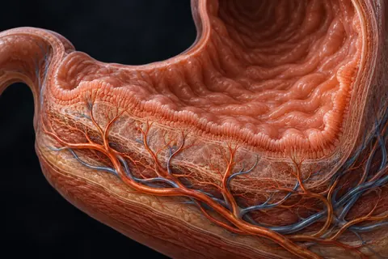
BPC-157
Não aprovadoO peptídeo de reparo mais discutido — e quase só em modelo animal
Cartalax
Não aprovadoBioregulador curto estudado em cartilagem
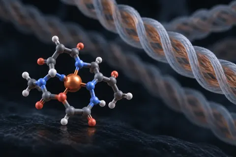
GHK-Cu
Não aprovadoPeptídeo de cobre — o acúmulo é a variável que manda no ciclo
KPV
Não aprovadoTripeptídeo anti-inflamatório, fragmento do α-MSH
LL-37
Não aprovadoO único peptídeo antimicrobiano catelicidina humano
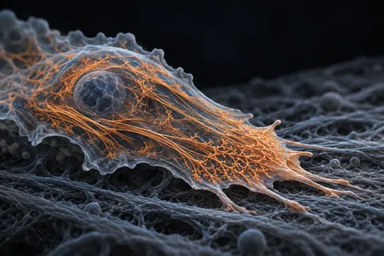
TB-500
Não aprovadoFragmento da timosina beta-4 — migração celular
Metabólico e peso
Agonistas de incretina e correlatos estudados em peso e glicemia.
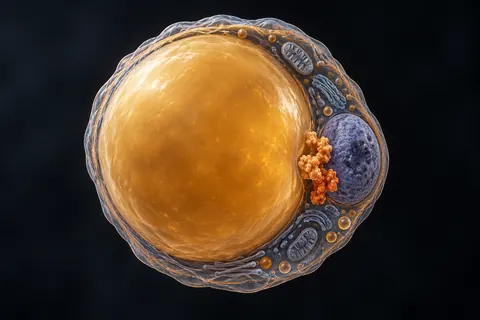
5-Amino-1MQ
Não aprovadoMolécula pequena, não é peptídeo, estudada em gordura e NNMT
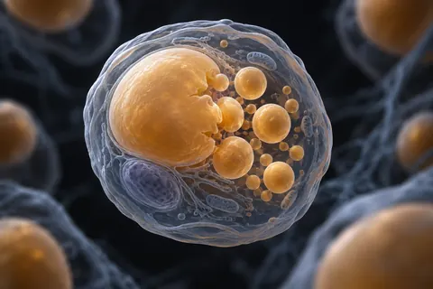
AOD-9604
Não aprovadoFragmento do GH estudado em lipólise
Cagrilintida
Não aprovadoAnálogo de amilina semanal, em investigação
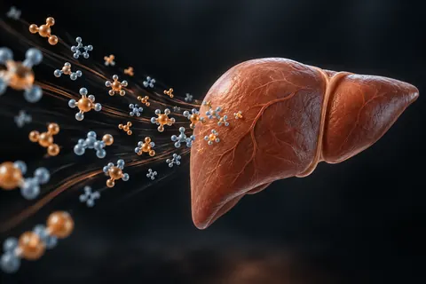
Lipo-C
Aprovação parcialInjeção lipotrópica manipulada — não é um peptídeo
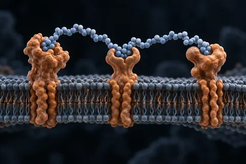
Retatrutida
Não aprovadoAgonista triplo em fase 3 — GIP, GLP-1 e glucagon
SLU-PP-332
Não aprovadoAgonista pan-ERR vendido como 'mimético de exercício'
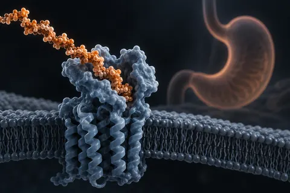
Semaglutida
AprovadoOzempic, Wegovy e Rybelsus — a mesma molécula
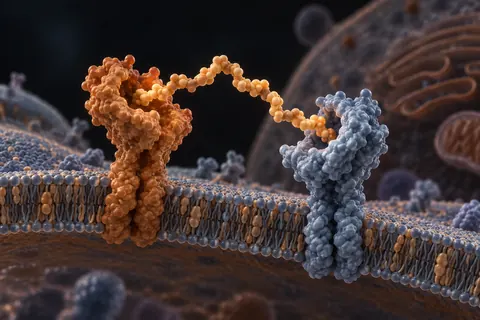
Survodutida
Não aprovadoAgonista duplo GLP-1/glucagon, código BI 456906
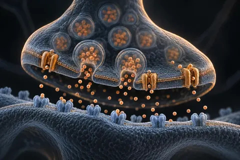
Tesofensina
Não aprovadoInibidor triplo de recaptação, em comprimido oral
Tirzepatida
AprovadoAgonista duplo GLP-1/GIP — Mounjaro e Zepbound
Eixo do hormônio do crescimento
Análogos de GHRH e secretagogos que pedem ao próprio corpo que libere GH.
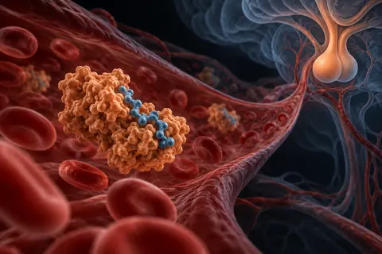
CJC-1295 com DAC
Não aprovadoAnálogo de GHRH de ação longa, ligado à albumina
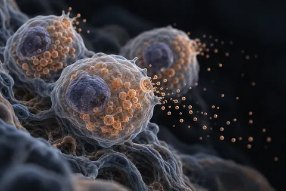
CJC-1295 sem DAC (Mod GRF 1-29)
Não aprovadoPulso curto de GHRH, sem acúmulo
GHRP-6
Não aprovadoSecretagogo que imita a grelina — e abre a fome junto
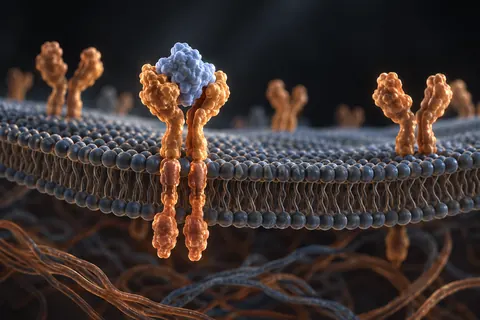
IGF-1 LR3
Não aprovadoAnálogo de IGF-1 de ação longa — o de maior risco do grupo do GH
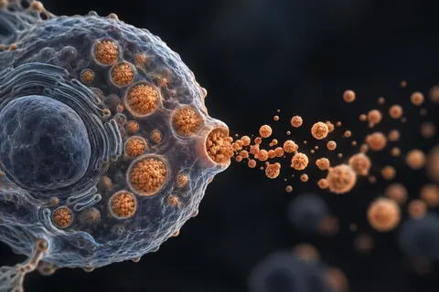
Ipamorelina
Não aprovadoSecretagogo seletivo, sem o disparo de fome do GHRP-6
Sermorelina (GRF 1-29)
Aprovação parcialCópia dos 29 primeiros aminoácidos do GHRH
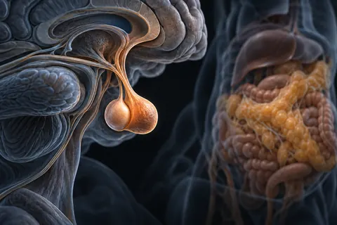
Tesamorelina
AprovadoO único análogo de GHRH aprovado pela FDA
Neuro e cognição
Compostos estudados em atenção, memória, ansiedade e sono.
Adamax
Não aprovadoParente experimental do Semax, quase sem pesquisa publicada
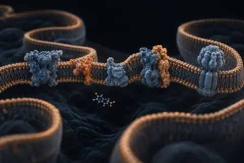
Azul de metileno
Aprovação parcialCorante de 1876 que virou medicamento hospitalar
Cerebrolisina
Aprovação parcialMistura injetável de peptídeos de origem suína
DSIP
Não aprovadoPeptídeo indutor de sono delta — nome maior que a evidência
Pinealon (EDR)
Não aprovadoBioregulador curto da escola de Khavinson
Selank (TP-7)
Aprovação parcialAnsiolítico peptídico russo, par do Semax
Semax
Aprovação parcialHeptapeptídeo russo derivado do ACTH, ligado a BDNF
Longevidade e mitocôndria
Alvos ligados a senescência, NAD+ e função mitocondrial.
Epitalon (epithalon, AEDG)
Não aprovadoTetrapeptídeo russo associado a telomerase
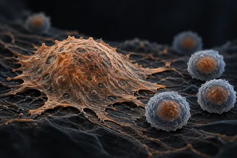
FOXO4-DRI
Não aprovadoSenolítico experimental — o de menor margem desta lista
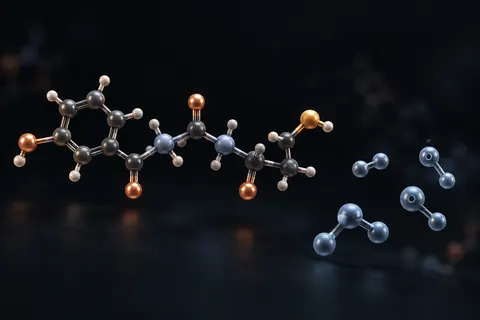
Glutationa
Aprovação parcialO antioxidante que o corpo já fabrica
Humanina (HNG)
Não aprovadoPeptídeo codificado na mitocôndria, não no núcleo
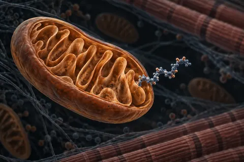
MOTS-c
Não aprovadoPeptídeo mitocondrial ligado à via AMPK
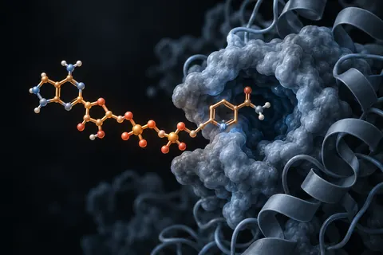
NAD+
Não aprovadoCoenzima central — a via de administração muda tudo
SS-31 (elamipretida)
Não aprovadoPeptídeo que se liga à cardiolipina mitocondrial
Hormonal e sexual
Eixo reprodutivo, libido, pigmentação e vasodilatação.
Kisspeptina
Não aprovadoA chave a montante do eixo reprodutivo
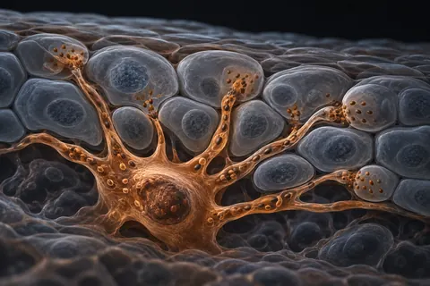
Melanotan II (MT-2)
Não aprovadoBronzeamento por via de melanocortina — e uma lista de efeitos
Ocitocina
Aprovação parcialHormônio aprovado em obstetrícia, usado off-label em cognição social
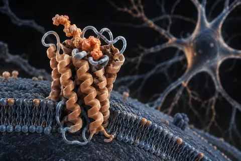
PT-141 (bremelanotida)
Aprovação parcialAgonista MC3R/MC4R — aprovado nos EUA como Vyleesi
VIP (peptídeo intestinal vasoativo)
Não aprovadoNeuropeptídeo de 28 aminoácidos, meia-vida muito curta
Imune
Modulação da resposta imune.
Combinações
Protocolos que juntam dois ou mais compostos no mesmo ciclo.
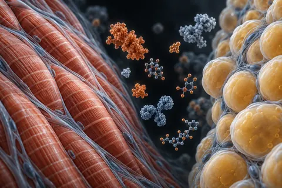
Advanced Recomp
Não aprovadoRetatrutida + CJC-1295 sem DAC + ipamorelina
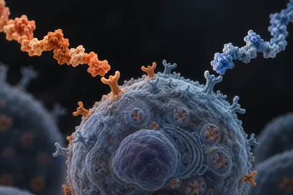
CJC-1295 sem DAC + Ipamorelina
Não aprovadoA dupla de GH mais planejada da comunidade
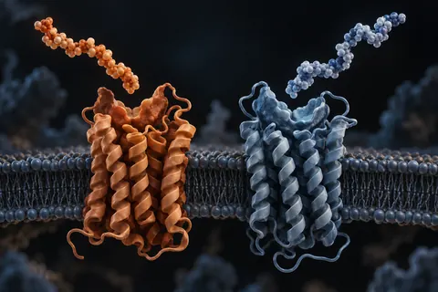
CagriSema
Não aprovadoCagrilintida 2,4 mg + semaglutida 2,4 mg, dose fixa
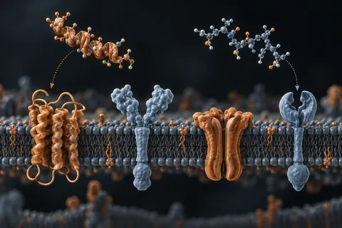
Cagrilintida + Retatrutida
Não aprovadoAgonista triplo somado a análogo de amilina
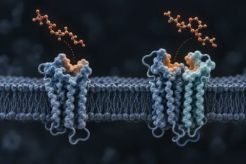
Cagrilintida + Tirzepatida
Não aprovadoDupla semanal de apetite
Dupla nootrópica russa
Não aprovadoSemax + Selank
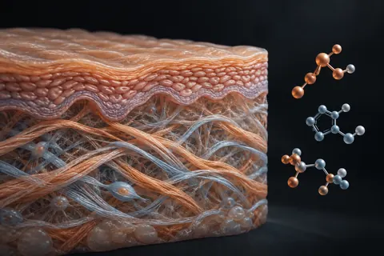
GLOW
Não aprovadoBPC-157 + TB-500 + GHK-Cu num frasco
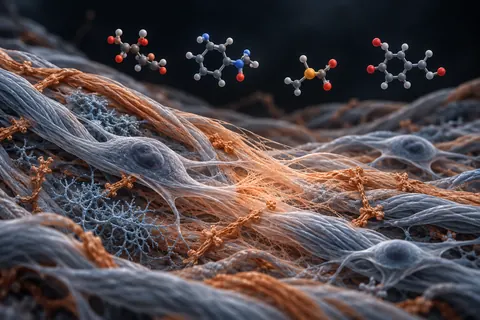
KLOW
Não aprovadoGHK-Cu + KPV + BPC-157 + TB-500, frasco de 80 mg
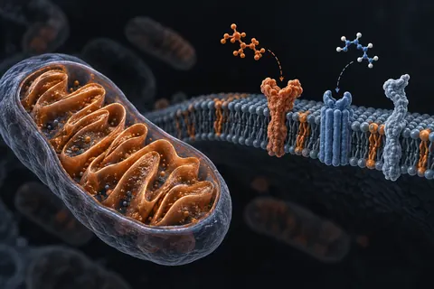
Retatrutida + MOTS-c
Não aprovadoApetite por uma via, mitocôndria por outra
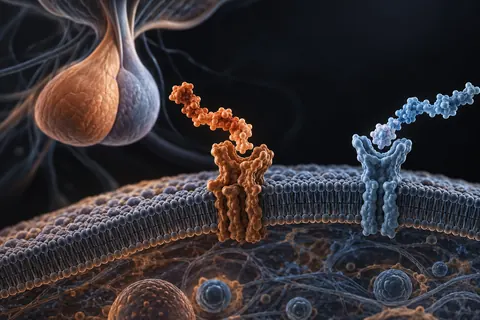
Tesamorelina + Ipamorelina
Não aprovadoDuas portas diferentes para o mesmo pulso de GH
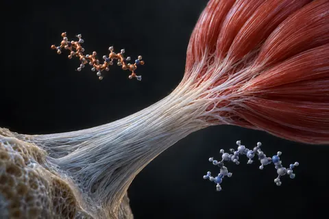
Wolverine
Não aprovadoBPC-157 + TB-500, a base de reparo
Verificado em fonte primária
Páginas montadas direto do PubMed e do ClinicalTrials.gov, não da fonte secundária. Trazem a contagem de evidência e a consulta usada.
"Dois compostos do brócolis" contra o estrogênio (indol-3-carbinol, DIM e sulforafano)
Não aprovadoOs vídeos não dizem quais são os "dois compostos"; nos candidatos mais estudados, o DIM não mexeu na testosterona de homens e, no laboratório, bloqueou o receptor de androgênio.
"Whey caseiro" de proteína isolada de soja
Aprovação parcialA receita entrega mesmo cerca de 25 g de proteína por dose, mas não é whey: é soja. Para músculo, a diferença é pequena quando a proteína total do dia é suficiente, e a soja não baixou a testosterona nas meta-análises.
ATP oral (ATP dissódico, PEAK ATP)
Não aprovadoO "+147% de força" é a diferença entre os ganhos de 11 e 10 homens num estudo pago em parte pela fabricante e questionado por discrepâncias; tomado por boca, o ATP não aparece no sangue.
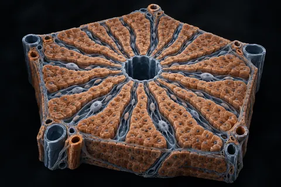
Ajuste de dose por função hepática
Aprovação parcialAqui não é só lacuna: há dano documentado, com número e desfecho — e ele atinge exatamente quem este site atrai
Ajuste de dose por função renal
Aprovação parcialOnde o dado existe, a bula manda não ajustar nada — e o risco de verdade está três seções acima, num item que quase ninguém lê
Akarkara (Anacyclus pyrethrum)
Não aprovadoOs "+150%" e "+100%" de testosterona livre não aparecem em nenhum estudo; tudo o que existe sobre hormônio e ereção com essa raiz foi feito em ratos.
Albumina (clara de ovo desidratada)
Aprovação parcialO único estudo de Phillips com ovo que localizei usou ovo inteiro, em 6 homens, sem carne nem whey; e a proteína do ovo cru teve digestibilidade de 51,3%, contra 90,9% cozida.
Alfa-GPC antes do treino ("GH 44 vezes")
Não aprovadoO "GH 44 vezes" veio de um resumo de congresso com 7 homens em que o GH de partida do dia da alfa-GPC era dez vezes menor que o do placebo; com o mesmo treino, em 20 homens, o GH não mudou.
Alho preto e S-alil-cisteína
Não aprovadoO estudo japonês de 2021 deu S-alil-cisteína por injeção na barriga de 8 camundongos; em pessoas, ninguém mediu testosterona, e a queda de pressão foi de 1,8 mmHg.
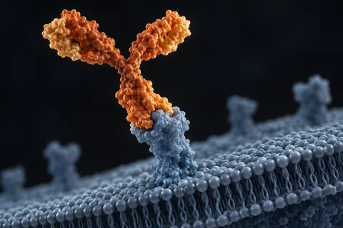
Anticorpos monoclonais
Aprovação parcialTrinta e cinco vezes maior que um peptídeo, feito por célula viva e dado em infusão venosa — dos três que aparecem na conversa de composição corporal, um único tem bula
Ashwagandha (Withania somnifera; extrato KSM-66)
Não aprovadoO "+17% de testosterona" não está no estudo de 57 homens citado nos vídeos; vem de 46 homens inférteis. No Brasil, a ANVISA manda apreender produtos irregulares com ashwagandha.
Atrazina na água (herbicida)
Não aprovadoOs sapos que "viraram fêmeas" eram 4 de 40, a 2,5 ppb; na água tratada de 22 capitais, a atrazina medida ficou entre 2 e 6 nanogramas por litro.
Azeite de oliva extravirgem (oleuropeína)
Não aprovadoO "+17,4% de testosterona" vem de um estudo marroquino de 3 semanas sem grupo controle, que não mediu oleuropeína; e acidez de 0,2% não separa extravirgem de refinado.
Açafrão verdadeiro (Crocus sativus, extrato do estigma)
Não aprovadoContra antidepressivo, 8 ensaios pequenos não acharam diferença, o que não prova empate; contra placebo, o efeito aparece na escala do paciente, não na do avaliador.
BPA, ftalatos e microplástico (exposição a plástico)
Não aprovadoEm homens, mais BPA na urina andou junto com testosterona mais alta, não mais baixa; com ftalatos há associação. Três dias sem comida embalada cortaram o BPA da urina em 66%.
Banho frio e imersão em água fria (LH e testosterona)
Não aprovadoNos estudos que mediram, o frio não subiu o LH nem a testosterona: ficaram iguais ou caíram. O "14 °C por 11 minutos" junta dois estudos que não mediram nenhum dos dois.
Berberina (cloridrato de berberina)
Não aprovadoO estudo de 2008 que "empatou com a metformina" tinha 36 pacientes por 3 meses; nenhum ensaio comparou berberina com semaglutida, e ela inibe enzimas que metabolizam remédios.
Beta-alanina (carnosina muscular)
Não aprovadoA beta-alanina funciona de verdade, mas o ganho médio é de cerca de 3%, não 80%; e os 3 a 6 g por dia dos vídeos passam do teto de 2 g da ANVISA.
Betaína (betaína anidra, trimetilglicina)
Não aprovadoO estudo de 2013 existe e tem os números do vídeo, mas foi pago pela fornecedora da betaína; no Brasil, a betaína não está na lista de constituintes de suplemento.
Beterraba em pó e nitrato dietético
Não aprovadoO "+33% de ereção noturna" não aparece em nenhum estudo publicado que localizei; no treino, o nitrato da beterraba tem efeito real, mas pequeno.
Bicarbonato de sódio (como suplemento de treino)
Não aprovadoO "+27% até a exaustão" é de uma meta-análise de 1993; as análises mais novas acham cerca de 2%, e os "7 g" que circulam ficam abaixo da dose mínima eficaz para quase todo adulto.
Bioreguladores curtos de Khavinson
Não aprovadoOnze peptídeos, cinco estudos clínicos, zero ensaios registrados
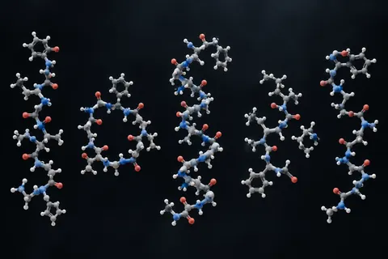
Blends prontos — o que a combinação tem de estudo
Não aprovado32 dos 33 blends vendidos prontos têm zero estudo registrado. 11 não têm nem um artigo que cite os componentes juntos
Boro (SHBG e testosterona livre)
Não aprovadoO "+28% de testosterona livre" é atribuído a um estudo de 8 homens sem grupo placebo; no Brasil, 10 mg por dia passa do máximo permitido em suplemento.
Bulbine natalensis (Bulbine latifolia)
Não aprovadoO "+346% de testosterona" vem de ratos, e as mesmas doses que subiram o hormônio alteraram fígado e rim. Em homens, não há um único estudo de eficácia publicado.
Butea superba (kwao krua vermelho)
Não aprovadoO único ensaio publicado perdeu todo o grupo placebo em três semanas, e o único estudo contra o sildenafil achou o remédio misturado no lote "natural".
CJC-1295 + ipamorelina (o "GH sem colateral")
Não aprovadoNenhum estudo publicado testou CJC-1295 e ipamorelina juntos em pessoas; o "+1000% de GH" vem de um ensaio de 2006 com o CJC-1295 sozinho, e a ANVISA diz que nenhum dos dois tem registro.
CRISPR
Aprovação parcialDe 64.641 artigos, 67 são ensaios clínicos e 1 virou medicamento — e o que limita esse medicamento não é a edição do gene, é a quimioterapia em volta dela
Cafeína (anidra pré-treino e energético diário)
Aprovação parcialO "+16% de força" é a velocidade da barra numa só carga, em 14 homens; a força máxima subiu de 4% a 7%. No Brasil, suplemento pode ter até 200 mg por dose.
Calor nos testículos (cueca de poliéster, banco aquecido e notebook no colo)
Não aprovadoO estudo dos 14 homens de poliéster existe, mas usou uma funda anticoncepcional, foi reversível e não mexeu nos hormônios; o calor derruba espermatozoide, não testosterona.
Calvície — o antigo e o que está chegando
Aprovação parcialDezoito tratamentos medidos na mesma régua: o minoxidil tem 23 registros ativos na ANVISA como antialopecia, e o PP405, que circula como pó de pesquisa, tem 1 artigo no PubMed
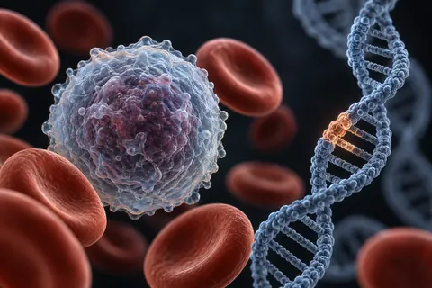
Casgevy
Aprovação parcialO gargalo declarado não é o preço — na Inglaterra são 1.794 elegíveis e 23 tratamentos no primeiro ano, e o motivo que o avaliador escreve é a internação, não o custo
Castanha-do-pará e selênio
Não aprovadoDuas castanhas renderam 53 µg de selênio num ensaio, mas o teor vai de 2,07 a 68,15 mg por kg conforme a região do Brasil.
Celular no bolso e notebook no colo (radiofrequência e calor)
Não aprovadoO "−21% de concentração" do estudo suíço não está no artigo, e o celular no bolso não se associou a sêmen pior; o que o notebook no colo comprovadamente faz é esquentar o escroto.
Chá verde (adjuvante da mucuna)
Não aprovadoO chá verde entra no protocolo da mucuna "para o fluxo", sem dose; o que existe são catequinas que melhoram pouco a dilatação das artérias, e extrato concentrado que mexe no fígado.
Cipionato de testosterona (Deposteron) e reposição hormonal (TRT)
Aprovação parcialA cronologia de 30 dias que circula não bate com os estudos: o interesse sexual começa em 3 semanas e a massa magra muda em 12 a 16, e no Brasil é vedado prescrever testosterona para estética.
Cistanche (Cistanche deserticola e Cistanche tubulosa)
Não aprovadoO estudo dos "636 para 773 ng/dL" existe, mas os dois números são placebo e cistanche no fim do teste, não antes e depois; o "+44,6%" não está nele.
Clembuterol
Não aprovadoNos dois ensaios randomizados em humanos, o clembuterol aumentou massa magra e não reduziu gordura mais que o placebo; o estudo de 2025 citado como prova de "queima de gordura" diz o contrário.
Clomifeno (citrato de clomifeno, Clomid)
Não aprovadoO "+146%" existe, em estudos pequenos e sem grupo controle; no homem, o clomifeno não tem indicação em bula, e a versão purificada teve o registro recusado na Europa.
Colostro bovino
Não aprovadoNo Brasil, suplemento de colostro pode ter no máximo 4 g por dia; os estudos de treino usaram de 10 a 60 g, e na maioria o IGF-1 do sangue não subiu.
Cominho-preto (Nigella sativa; timoquinona)
Não aprovadoO estudo iraquiano existe, mas durou 3 meses, não 6, e a testosterona subiu 29%; os 59% eram da motilidade dos espermatozoides.
Cordyceps (Ophiocordyceps sinensis e Cordyceps militaris)
Não aprovadoNenhum ensaio humano testou o cordyceps em ereção ou testosterona; no treino, a meta-análise de 2025 achou ganho aeróbio pequeno, com p = 0,05 na resistência.
Creatina (monoidratada)
Aprovação parcialO "8% a 14% a mais de força" existe e vem de uma revisão de 2003; a saturação de 15 a 20 g por dia passa de 3 a 4 vezes o máximo diário permitido em suplemento no Brasil.
DDT e DDE na dieta (os jacarés do Lago Apopka)
Não aprovadoOs jacarés do Lago Apopka tiveram pênis 24% menor e testosterona 70% mais baixa; em homens expostos ao DDE, a testosterona apareceu mais baixa, igual ou até mais alta, conforme o estudo.
DHEA (deidroepiandrosterona, prasterona)
Não aprovadoO DHEA sobe o IGF-1, mas em homens jovens que treinavam não aumentou força nem massa magra além do placebo, e num ensaio de 2 anos em idosos não melhorou músculo, desempenho nem qualidade de vida.
DIM (3,3'-di-indolilmetano)
Não aprovadoO "−76% de estrogênio" não aparece em nenhum estudo de DIM que localizei; no maior ensaio, o DIM subiu a SHBG, a proteína que prende a testosterona no sangue.
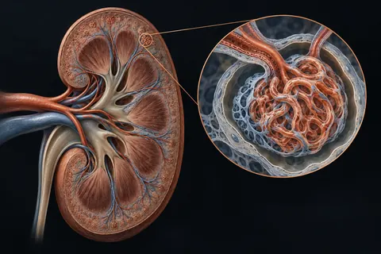
Doença renal
Aprovação parcialDe zero a seis medicamentos em quatro anos e meio — e cinco deles foram aprovados sobre um número que não é o que interessa ao paciente
Ecdisterona (20-hidroxiecdisona; inclui turquesterona)
Não aprovadoO estudo alemão que deu fama à ecdisterona usou 12 e 48 mg por dia, melhorou o supino e não o agachamento; a agência antidoping a monitora, não a proíbe.
Epicatequina ((−)-epicatequina; extrato de cacau)
Não aprovadoO estudo de 2013 que "derrubou a miostatina" tratou 6 pessoas por 7 dias, sem placebo; num ensaio de 4 semanas, a epicatequina não mexeu na miostatina do músculo.
Epimedium (icariina, "horny goat weed")
Não aprovadoA prova de que a icariina age como a tadalafila vem de enzima isolada e de ratos; tomada por boca, ela ficou abaixo do limite de detecção no sangue em dois estudos humanos.
Espinafre vermelho (red spinach, Amaranthus) e nitrato
Não aprovadoNa única meta-análise que separou as fontes, a beterraba melhorou o desempenho e o espinafre vermelho não; o extrato usado nos estudos tem cerca de 90 mg de nitrato por grama.
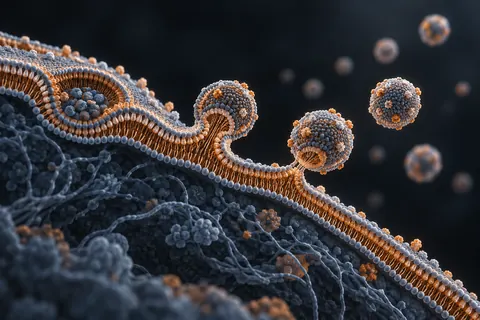
Exossomos
Não aprovado45.674 artigos, 83 ensaios randomizados e nenhum produto aprovado em agência nenhuma
Extrato de casca de pinheiro-marítimo (procianidinas)
Não aprovadoO "+230% de óxido nítrico" não aparece em nenhum estudo que localizei, e o 92,5% vem de um estudo de 2003 sem grupo controle e com arginina junto.
Fadogia agrestis (Vangueria agrestis)
Não aprovadoNenhum estudo em humanos; o artigo do mesmo grupo nigeriano na revista citada nos vídeos mostra efeito adverso no testículo de ratos, não aumento de testosterona.
Farinha de arroz no shake (carboidrato pós-treino)
Não aprovadoFarinha de arroz é carboidrato comum e funciona como caloria; o "pico de insulina que joga aminoácidos na fibra" não aumentou a síntese de músculo quando já havia proteína suficiente.
Feno-grego (fenogreco, Trigonella foenum-graecum)
Não aprovadoO "+37% acima do placebo" é testosterona na saliva; no sangue, o mesmo ensaio de 95 homens não diferiu do placebo. O "+46%" vem de estudo sem grupo controle.
Flúor na água e glândula pineal (filtros de água e de chuveiro)
Não aprovadoO flúor se acumula na calcificação da pineal de idosos, num estudo de 11 cadáveres; nenhum estudo em gente mediu melatonina, e o filtro de carvão de fato não tira fluoreto.
Forskolina (Coleus forskohlii)
Não aprovadoO "+33,77% de testosterona" é o desvio padrão do estudo de Kansas, não o efeito: a média subiu 16,77%, sem diferença estatística contra o placebo, em 15 homens.
Fosfatidilserina (cortisol e testosterona)
Não aprovadoO "+37% de testosterona" é de 10 homens pedalando 15 minutos, numa medida em que o pico da testosterona não diferiu do placebo; a pesquisa foi paga pela empresa de dois autores.
Fáscia de Buck e o "protocolo de perfusão"
Não aprovadoO vídeo não descreve a técnica. A fáscia de Buck existe e envolve os corpos do pênis, mas nenhum artigo a liga a bloquear vasos, e nenhum ensaio testou manipulação manual para ereção ou tamanho.
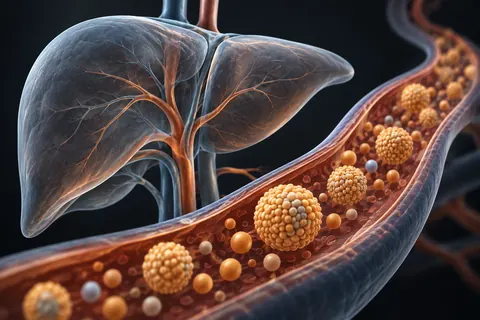
Fígado e lipídio
Aprovação parcialTreze moléculas com dois dígitos de artigo no PubMed e ensaios de desfecho de até 17.300 participantes — e uma só delas, a inclisirana, tem registro ativo na ANVISA
GABA oral e o "+400% de GH"
Não aprovadoO "+400% de GH" existe: veio de 11 homens que tomaram 3 g de GABA uma vez, em jejum; no Brasil, o máximo permitido em suplemento é 300 mg por dia.
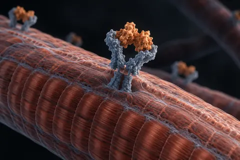
GH e miostatina — o que ainda faltava
Não aprovadoO PEG-MGF tem 5 artigos e 0 estudos. A folistatina vendida em frasco nunca foi testada em gente — o que existe em registro é terapia gênica. O ACE-031 parou por segurança
Gengibre e fertilidade masculina (Zingiber officinale)
Não aprovadoO "LH +43%" existe, num estudo iraquiano sem placebo que não diz dose nem forma; o único ensaio com placebo, em 100 homens, não mudou contagem nem motilidade.
Geroprotetores
Aprovação parcialDezessete candidatos a retardar o envelhecimento: 6 não têm um único ensaio de fase 3 registrado, e 8 dos 13 princípios ativos buscados não têm registro ativo na ANVISA
Ginseng vermelho coreano (Panax ginseng; ginsenosídeos)
Não aprovadoA revisão Cochrane de 9 ensaios e 587 homens achou efeito trivial do ginseng na ereção; a "fibrose desfeita" e o "+230% de óxido nítrico" não têm estudo humano.
Glicerol em pó (hiper-hidratação)
Não aprovadoA agência antidoping tirou o glicerol da lista em 2018 porque o efeito no volume de sangue era "mínimo", não porque a detecção melhorou; e o estudo de 1990 do grupo citado viu suor maior, não menor.
Glicina antes de dormir (sono e GH)
Não aprovadoO "70% do GH" não é aumento: é a parte do GH do homem que sai no começo do sono; nenhum estudo de glicina antes de dormir mediu GH.
Glifosato e alimentos transgênicos
Não aprovadoO "−35% de testosterona" vem de células de rato numa placa de cultura; em homens, nenhum estudo ligou glifosato ou transgênico a testosterona baixa.
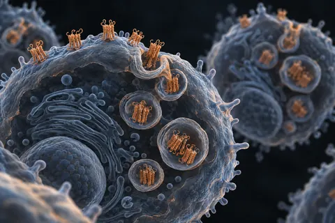
GnRH e gonadotrofinas — os análogos que têm bula
Aprovação parcialTriptorrelina, leuprorrelina e gosserrelina têm 86, 124 e 125 ensaios de fase 3 registrados, em câncer e fertilidade. Nos registros das cinco buscas, nenhum é sobre recuperação depois de anabolizante
Gordura corporal, "pênis enterrado" e aromatase
Não aprovadoEm 778 homens, o IMC só se associou ao comprimento medido a partir da pele, não do osso: a gordura esconde, não encolhe. Os "2,3 cm" e "1 a 3 cm a cada 10 kg" não estão nas fontes citadas.
Gordura na dieta e testosterona (a "diretriz de 1977")
Não aprovadoEm ensaios pequenos, dietas com 25% de gordura ou menos deixaram a testosterona 12% a 13% menor; o "21% em 1996" não está no estudo de 1996, e a meta de 1977 era 30% de gordura, não zero.
Hidrolisado de caseína (PeptoPro)
Aprovação parcialO estudo de Maastricht citado existe: o hidrolisado chegou ao sangue 27% mais rápido que a caseína inteira, mas a síntese muscular não diferiu, e em outro estudo do mesmo grupo o whey ganhou dos dois.
Hidrolisado de proteína de fava (PeptiStrong, NPN_1)
Não aprovadoOs três ensaios em humanos têm funcionários da fabricante entre os autores; 47%, 136% e "4 vezes o whey" não aparecem neles, e 24,5% e 21,6% não tiveram significância.
Huperzina A ("dobro de força" em 7 dias)
Não aprovadoNenhum estudo mediu força com huperzina A; o ensaio financiado pelo instituto americano do envelhecimento, com 210 pacientes de Alzheimer, falhou no desfecho principal.
Incretinas e amilinas de nova geração
Aprovação parcialTreze moléculas que disputam o lugar da semaglutida — 11 já têm fase 3 registrada e 9 das 11 com DCI publicada não têm um único registro ativo na ANVISA
Intestino — os análogos de GLP-2 e a larazotida
Aprovação parcialA fase 3 dos análogos de GLP-2 é de síndrome do intestino curto, não de intestino permeável. O único ensaio de fase 3 da larazotida foi encerrado pelo patrocinador — e a busca por ela devolve registros de um remédio de doença de Fabry
Ioimbina (cloridrato de ioimbina; casca de Pausinystalia)
Aprovação parcialO estudo de 86 homens com 71% contra 45% existe; o que não se diz é que, na disfunção de causa orgânica, a ioimbina mal supera o placebo.
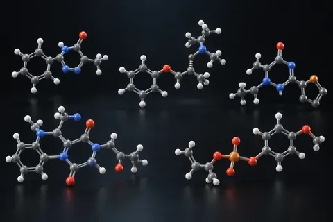
Itens de tarja da lista
Aprovação parcial13 medicamentos que apareciam misturados com suplemento
Jejum de 24 horas e jejum intermitente de 16 horas (GH, autofagia e testosterona)
Não aprovadoO "+2.000% de GH" veio de uma notícia sobre um congresso; o estudo publicado tinha 30 voluntários, só 10 homens, e o GH deles partia de quase zero.
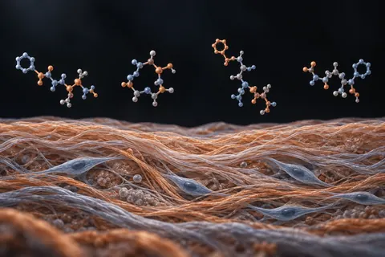
KLOW — a evidência
Não aprovadoA blend segue sem ensaio, mas três componentes entraram em fase clínica em 2026
L-arginina (inclui aspartato e cloridrato de arginina)
Não aprovadoAs doses de 5 a 9 g que circulam passam do máximo de 3,81 g por dia que a ANVISA permite em suplemento, e o GH extra não virou músculo em nenhum estudo que localizei.
L-citrulina (inclui citrulina malato)
Não aprovadoO único ensaio de L-citrulina sozinha em disfunção erétil tem 24 homens, usou 1,5 g por dia e não mediu o tamanho do pênis.
L-glutamina e hormônio do crescimento
Não aprovadoO estudo de 1995 existe: 9 pessoas, 2 g num refrigerante, sem bebida placebo; o resumo diz só que o GH estava "elevado" aos 90 minutos, e o efeito nunca virou músculo em quem treina.
L-ornitina (cloridrato de L-ornitina)
Não aprovadoO estudo de 1990 citado nos vídeos deu a dose em jejum de manhã, não à noite; o "2,7 vezes" de 1981 é de arginina com lisina, sem ornitina.
Limosilactobacillus reuteri (cepa ATCC PTA 6475)
Não aprovadoOs testículos maiores e a testosterona alta são de camundongos; no único ensaio com placebo em homens de 55 a 65 anos, a mesma cepa não mudou a testosterona.
Luz vermelha (fotobiomodulação, 660–670 nm) e luz azul de LED
Não aprovadoO "+33,5% de testosterona" com laser não foi localizado; no único ensaio randomizado que mediu testosterona após luz no corpo inteiro, ela não mudou.
Lúpulo, 8-prenilnaringenina e cerveja sem álcool (fitoestrógeno)
Não aprovadoO 8-PN do lúpulo é potente no tubo de ensaio, mas a maioria das cervejas nem tem quantidade detectável; no único ensaio comparado, a testosterona caiu com a cerveja com álcool, não com a sem álcool.
Maca peruana (Lepidium meyenii)
Não aprovadoAqui o vídeo acerta o principal: em ensaios controlados, a maca melhorou o desejo sem mexer na testosterona. Mas os ciclistas não bateram o placebo, e a fertilidade não se confirmou.
Magnésio (treonato e cloreto P.A.)
Não aprovadoO "+24% de testosterona livre" não está no resumo do estudo citado, o "P.A." do cloreto é grau de reagente e, no Brasil, o máximo em suplemento é 350 mg por dia.
Maitake (Grifola frondosa) e glicose
Não aprovadoOs "30% a 63%" vêm de 7 voluntários sem grupo controle, que também tomavam remédio para diabetes; não há ensaio randomizado de maitake em diabetes no PubMed.
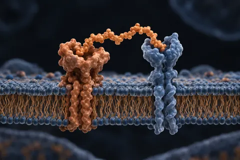
Mazdutida
Não aprovado12 ensaios de fase 3, publicação em NEJM, JAMA e Nature — e nenhuma bula
Medicamentos do leste europeu
Aprovação parcial18 importados, 29 ensaios registrados — e um histórico de mortes esquecido
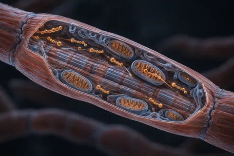
Meldonium (mildronato)
Aprovação parcial357 artigos, 7 ensaios registrados — e uma janela de detecção de meses
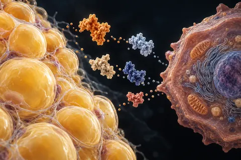
Metabolismo e gordura — exenatida, AICAR, CBL-514 e outros
Aprovação parcialA exenatida tem 93 ensaios de fase 3 e zero registro ativo na ANVISA. A oxintomodulina, zero de fase 3. O CBL-514 tem 7 artigos e 16 estudos registrados, todos da mesma empresa
Moringa (folha de Moringa oleifera)
Não aprovadoNo Brasil, alimento com moringa é proibido desde 2019, e a ANVISA reafirmou isso em setembro de 2026; a meta-análise de 9 ensaios não achou benefício consistente.
Mucuna pruriens (feijão-veludo; fonte de L-dopa), com vitamina B6 e chá verde
Não aprovadoO "+878% de GH" é de 15 homens, sem placebo, com uma mistura de duas plantas, e o pico não passou de 2 ng/mL. E a vitamina B6 junto anula o efeito da L-dopa.
Muira puama (Ptychopetalum olacoides, marapuama)
Não aprovadoO "62% em 14 dias" vem de uma apresentação em congresso de 1990 que não está no PubMed; nenhum ensaio com placebo testou a raiz sozinha, e no Brasil não há produto ativo.
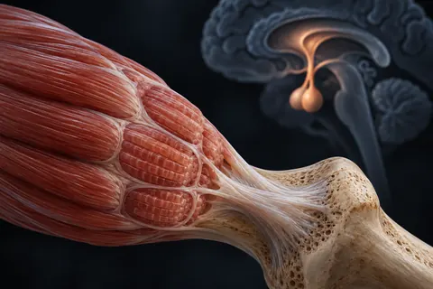
Músculo, osso, eixo HPG e imune
Aprovação parcialQuinze moléculas que a conversa de peptídeo cita como se fossem equivalentes aos frascos de pesquisa — 6 das 14 buscadas têm registro ativo na ANVISA, com nome comercial e classe terapêutica declarada
NAC (N-acetilcisteína)
Não aprovadoA FDA mandou cartas a 7 empresas de produtos "contra ressaca" em 2020, não a centenas; no Brasil, NAC é remédio e também fonte de cisteína em suplemento.
Neuro e cognição — o bloco russo e o que tem bula
Aprovação parcialNoopept, fenilpiracetam, bromantano e cortexina somam 0 estudos registrados no ClinicalTrials.gov; lecanemabe e donanemabe já têm registro ativo na ANVISA
Neuro — as formas acetiladas e os que pararam na fase 3
Não aprovadoO Semax e o Selank "N-acetil amidato" têm 6 e 2 artigos e zero estudo registrado. O rapastinel teve 10 ensaios de fase 3 e foi abandonado; a davunetida não superou o placebo
Niacina (ácido nicotínico) e hormônio do crescimento
Não aprovadoO estudo de 2008 existe: 7 homens, 2 g de ácido nicotínico em 4 horas, e o GH do segundo sprint triplicou em relação ao primeiro. No Brasil, o máximo diário em suplemento é 35 mg.
NoFap: abstinência de pornografia e masturbação ("jejum de dopamina")
Não aprovadoNum ensaio de 7 dias sem pornografia, ninguém teve sintoma de abstinência; o estudo do "pico de testosterona no 7º dia" foi retratado em 2021.
Nootrópicos
Aprovação parcial32 com evidência humana, 12 sem ensaio nenhum — e quatro contagens que estavam infladas
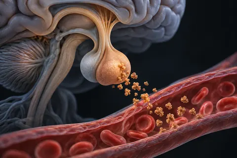
O eixo do GH fora do frasco de peptídeo
Aprovação parcialO hormônio recombinante tem 54.472 artigos, 183 ensaios de fase 3 e 9 registros ativos na ANVISA; os secretagogos que a comunidade usa no lugar dele têm zero registros ativos
O que existe no Brasil
Não aprovado40 dos 44 compostos deste site não têm nenhum medicamento registrado na ANVISA
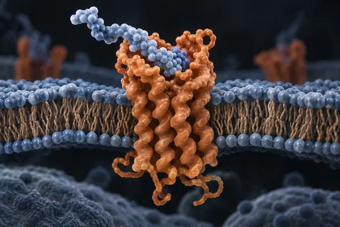
Os GLP-1 contra a bula
Aprovação parcialAs doses estavam certas. A tarja preta estava faltando
Oximetolona (Hemogenin, Anadrol-50)
Não aprovadoO Hemogenin é um anabolizante oral feito para anemia, sem registro ativo na ANVISA desde 2020; nos estudos, até 43% dos pacientes tiveram enzimas do fígado acima de cinco vezes o basal.
Parabenos e ftalatos em shampoo e cosméticos
Não aprovadoO "99,1%" existe, mas é de urina de americanos de todas as idades, não de sangue de homens; o butilparabeno baixou testosterona em ratos, e em homens os estudos não concordam.
Peptídeos cosméticos — argirelina, Matrixyl e companhia
Não aprovadoA argirelina, a mais estudada, tem 50 artigos e 6 estudos — os que dizem a via no título são de creme e sérum. 6 dos 10 nomes têm 4 artigos ou menos no PubMed
Peptídeos de bancada — SS-20, SHLP-2, SHLP-3 e PNC-27
Não aprovadoOs quatro somam 77 artigos e zero estudo registrado no ClinicalTrials.gov. O PNC-27 aparece em loja descrito como antitumoral, sem um único ensaio em gente
Peptídeos de colágeno para músculo (Body Balance)
Não aprovadoO estudo de Freiburg de 2015 existe, mas a gordura caiu 5,4 kg contra 3,5 kg no placebo, não o triplo; e só em 2025 o artigo declarou que um autor tem pedido de patente do ingrediente.
Pfaffia paniculata ("ginseng brasileiro", Hebanthe eriantha)
Não aprovadoNenhum estudo em gente testou o "ginseng brasileiro" para músculo, libido ou diabetes; em camundongos, uma Pfaffia baixou a testosterona e piorou o sêmen.
Placebo, nocebo e a "reprogramação de crença"
Não aprovadoEm 63 ensaios com 12.564 homens, o placebo melhorou a ereção com efeito pequeno a moderado, e o remédio com efeito grande. O nocebo é real. O "protocolo de Harvard em 4 etapas" é um roteiro publicado inteiro.
Pré-treino caseiro (guaraná, canela, gengibre e cafeína anidra)
Não aprovadoPela própria receita, uma medida de 10 g leva de 345 a 481 mg de cafeína, e o saco de 20 g de cafeína pura passa da faixa que a FDA considera potencialmente letal.
Reparo além do BPC e do TB-500
Não aprovadoA timosina β-4 tem 4 ensaios de fase 3 — e são de colírio para olho seco, não de reparo muscular; o AHK-Cu tem 1 artigo no PubMed
Respiração lenta e diafragmática (hipocapnia, efeito Bohr e ereção)
Não aprovadoRespiração lenta reduz estresse e ansiedade em ensaios, com efeito pequeno. O "40% a menos de oxigênio" é do fluxo do cérebro em hiperventilação forte, não do pênis.
Respiração nasal no sono (óxido nítrico, testosterona e fita na boca)
Não aprovadoO nariz entrega 4 a 6 vezes mais óxido nítrico que a boca, não 25, e a boca não chega a zero. Esse gás age no pulmão; nenhum estudo o liga à testosterona.
Retatrutida (LY3437943)
Não aprovadoO primeiro artigo de fase 3 da retatrutida publica −25,0% de peso em 80 semanas, não 28%; ela não é aprovada em lugar nenhum e, no Brasil, a ANVISA proibiu e mandou apreender toda retatrutida à venda.
Rhodiola e ginseng siberiano (Rhodiola rosea e Eleutherococcus senticosus)
Não aprovadoO "+12% de VO2 máximo" do ginseng siberiano vem de 9 homens em Taiwan, não de Moscou; os estudos mais rigorosos com a planta não acharam ganho no exercício.
Ronco e apneia obstrutiva do sono (testosterona, CPAP e perda de peso)
Não aprovadoHomens com apneia têm testosterona mais baixa, e o CPAP sozinho não a sobe nas meta-análises. Mas o CPAP trata a apneia; somar perda de peso subiu a testosterona em 77,6 ng/dL.
SARMs
Não aprovadoMetade dos produtos vendidos como SARM não contém o SARM do rótulo — e quatro dos mais populares nunca tiveram um ensaio clínico
Sal e potássio pré-treino (inclui sal rosa, sal integral e glicerol)
Não aprovadoNenhum estudo mediu "pump" com sal antes do treino de força; o sal rosa precisaria de mais de 30 g por dia para dar potássio que conte, e a pressão sobe com sal em quem treina também.
Schisandra (Schisandra chinensis, wu wei zi)
Não aprovadoA visão noturna e a fome suprimida dos caçadores são tradição; os dois ensaios com a fruta sozinha mediram força de perna em mulheres e idosos, e o maior risco documentado é interação com remédio.
Semax — a evidência
Aprovação parcialA dose dos ensaios russos é de 12 a 72 vezes a da comunidade
Shilajit (mumijo, resina mineral)
Não aprovadoO "+23,5%" não é do ensaio controlado que os vídeos descrevem: é de um estudo sem placebo com homens inférteis. E parte das amostras analisadas tinha chumbo, arsênio e mercúrio acima do limite.
Solidão e isolamento social (cortisol, testosterona, músculo e mortalidade)
Não aprovadoIsolamento social anda junto com 32% mais mortalidade em 90 coortes. Sobre testosterona, o dado humano é escasso, e homens com parceira fixa têm testosterona mais baixa, não mais alta.
Sono: temperatura do quarto, horário e telas (GH e testosterona)
Não aprovadoUma semana dormindo 5 horas baixou a testosterona diurna de 10 jovens em 10% a 15%; o "60% da recuperação hormonal" e a "janela de 40 minutos" não aparecem em estudo.
Tadalafila de uso diário (5 mg)
AprovadoA tadalafila diária é remédio aprovado e funciona, mas não "limpa artéria", não supera com folga o uso sob demanda e não previne encolhimento fora da cirurgia de próstata.
Tamanho de efeito
Aprovação parcialQuantos ensaios existem é uma pergunta; o que eles acharam é outra — 34 metanálises abertas
Thymalin
Aprovação parcialExtrato tímico russo — 293 artigos, 13 ensaios, zero registros
Timo e Cardiogen — timulina, timopentina e o bioregulador do coração
Não aprovadoA timulina tem 886 artigos e zero estudo registrado. A timopentina tem registros de HIV com o nome comercial Timunox. O Cardiogen divide o nome com um gerador de rubídio usado em exame do coração
Tirzepatida (Mounjaro) semana a semana
AprovadoNo estudo citado nos vídeos, quem trocou a tirzepatida por placebo voltou a ganhar peso mesmo recebendo orientação de dieta e exercício; o "14%" é do peso corporal, não do peso perdido.
Tongkat ali (Long Jack, Eurycoma longifolia)
Não aprovadoO "+581% de testosterona livre" não aparece em nenhum estudo que localizei; no ensaio com 600 mg, a SHBG e o LH não mudaram e o estradiol subiu.
Tratamentos que não são substância
Aprovação parcialCinco procedimentos que competem com os frascos deste site e somam 69.593 artigos no PubMed e 5.349 estudos registrados
Tração peniana e aparelho de vácuo (e "soltar o ligamento suspensor")
Não aprovadoTração diária ganhou em média 1,3 a 2,3 cm em estudos com Peyronie, pós-prostatectomia e queixa de pênis curto; o vácuo não aumentou o tamanho. Os "2 a 5 cm" e o "37%" não estão em estudo.
Treino acima do limiar de lactato ("finisher") e GH
Não aprovadoOs 10 minutos acima do limiar de lactato subiram o GH de 10 homens em 1992; o estudo de 1999 citado nos vídeos achou subida em linha reta com a intensidade, sem limiar.
Ultraprocessados, açúcar e álcool (dieta e testosterona)
Não aprovadoO álcool frequente baixa a testosterona em meta-análise; o "40% de queda" da toxina intestinal é de outro estudo; e não há ensaio que teste "zerar" açúcar para subir hormônio.
Vinagre de maçã em jejum
Não aprovadoO vinagre baixa um pouco o pico de glicose depois de uma refeição; o ensaio que prometia grande perda de peso foi retratado em 2025, e parte da saciedade vem de náusea.
Vitamina B6 (piridoxina), adjuvante da mucuna
Não aprovadoA B6 não protege a L-dopa da mucuna: acelera a perda dela. E o máximo diário em suplemento no Brasil, 98,60 mg, é mais de oito vezes o limite seguro fixado na Europa em 2023.
Vitamina D e exposição ao sol (testosterona)
Não aprovadoO "+25,2% de testosterona" vem de 54 homens analisados em 2011; o mesmo grupo de Graz testou de novo, com placebo, e não achou efeito.
Zerar o açúcar por 30 dias (a cronologia dos vídeos)
Não aprovadoTrês dias sem refrigerante deram fissura e dor de cabeça em 25 adolescentes; mas o paladar só mudou no 2º e 3º mês num ensaio, e em outro, de 6 meses, não mudou.
Zinco (inclui ostra e alimentos ricos em zinco)
Não aprovadoO estudo de 1996 existe, mas a testosterona subiu em 9 idosos com falta de zinco e sem grupo placebo; em homens sem deficiência, os ensaios não acham efeito.
Ácido D-aspártico (D-aspartato, DAA)
Não aprovadoOs "+42% em 12 dias" vêm de 23 homens saudáveis com testosterona normal, não baixa; quatro ensaios depois disso não repetiram o efeito, e 6 g por dia derrubaram a testosterona.
Ácido ursólico (casca de maçã)
Não aprovadoO estudo da PLOS ONE citado como prova de "−40% de gordura" foi feito em camundongos e não traz esse número; em homens que treinam, 400 mg por dia não somaram músculo.
Álcool e esteatose
Aprovação parcialA causa de base que nenhum hepatograma enxerga — e que multiplica, não soma, o risco de tudo o mais que se toma
Óleo de semente de abóbora (Cucurbita pepo) e beta-sitosterol
Não aprovadoO "+40% de fios contra +10% no placebo" existe, num único ensaio coreano de 76 homens pago pelo fornecedor da cápsula; a DHT não foi medida e a extração não foi descrita.
Suplementos e correlatos
Itens de venda livre, com a faixa de dose usada em estudos. Separados dos que exigem receita.